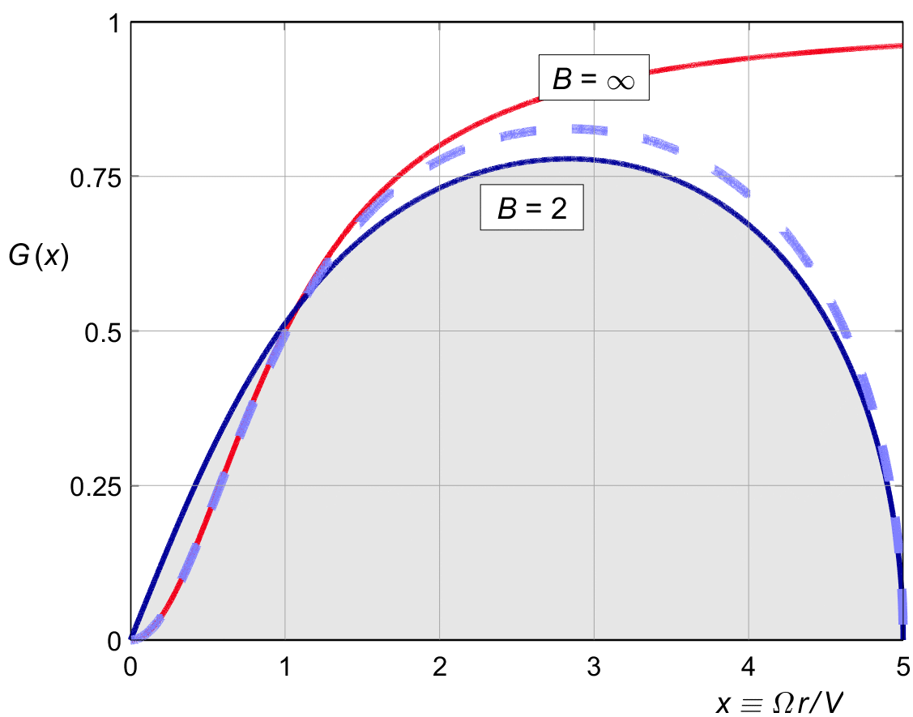

TIP LOSS
Tip loss is by far the most complex part of propeller theory. In the end, the problem comes down to determining the shape of the local mass reduction factor K ( x ) defined in (17.3) from some physical model.
There are two classical models, both based in potential theory. One is an approximate impulse method due to Prandtl, and the other is an exact vortex method associated with the name of Goldstein.
Prandtl’s method is the classical one. It has been in universal use for well over a century. Prandtl's method gives a physically intuitive insight, and it results in a very close approximation of the proper tip shape for conventional propellers of moderate pitch. But it is too optimistic about the resulting momentum efficiency even for ordinary propellers, and it fails completely for propellers of unusually high pitch and low blade count.
Goldstein's method is more complex, and initially less intuitive. But it is more accurate, especially for propellers of low tip speed ratio. And with proper explanation, it also sheds a different, but no less interesting light on the inner workings of the propeller.
In line with all the literature, we will use Prandtl’s solution for our initial introduction to the tip problem.
In a break with tradition, we will also give full details and a simple computer code for the vortex solution, and use its more exact results as the ground truth for K ( x ) right away.

Figure 18.1 :
Two solutions of G(x) for a common type of propeller.
Goldstein
solid,
Prandtl
dashed.
Figure 18.1 shows the two solutions for G (x), for a two-bladed propeller with a tip speed ratio of X = 5. The red line is the rotationally optimal cos 2 φ distribution of figure 10.1 ( i.e., before tip loss ), truncated at X = 5.
The figure is identical to Glauert's figure 64 in Durand (1934), and it is in fact the same case used by Prandtl in figure 3 of his original 1919 Appendix ( "Zusatz" ) to Betz's article.
Even for this very common case, the differences are quite apparent. The shape of Prandtl's solution is very similar to that of Goldstein's, but the the "amplitude" is quite different. We will find that Prandtl's approximation gives good results for the optimal shape of the propeller blades, but a far too optimistic value for the overall loss factor κG .
A fact that puzzled Glauert and is frankly still puzzling today, is that unlike Prandtl's, Goldstein's solution is not just a "tip" function. It affects the hub region as well, changing the curved character of the cos 2 φ function near the hub to a linear one. This change is quite pronounced in propellers of high pitch and low blade count, and only disappears for very high values of X, or for high blade count. In those regions, Prandtl's and Goldstein's solutions become identical.
Prandtl published his approximate solution for the tip loss in an appendix to Betz’s 1919 article on the rotational optimum, which also introduced the cos 2 φ shape of the optimal induction and the resulting Archimedes screw shape of the wake sheets.
Prandtl's derivation cleverly reverses cause and effect on the Archimedes screw. For the sake of his argument, Prandtl considers the Archimedes screw as a physical object which drives the flow, instead of as a "non-material" viscous wake sheet which drifts with the flow. He then approximates the shape of the screw by a straightened and simplified version of its rim, and from potential theory he derives the mass set in motion when it starts moving.
Setting the induction in motion from rest ( as if switching on the thrust ) requires an impulsive force from the spiral surface, and this force is proportional to the effective mass of the air set in motion. In this way, Prandtl obtains an effective mass factor without having to consider the flow in-between the spiral surfaces.
The limitation of Prandtl's method is not in the physics, but in his simplification of the screw shape.
Figure 18.1 gives a typical shape for Prandtl’s version of K ( x ), which we will come to call F ( x ) later for historical reasons.

Figure 18.1 : Typical Prandtl mass flow reduction F(x).
Prandtl was of course well aware that his solution was an approximation, albeit a very good one, and he pointed out the conditions under which it would hold.
In the early 1930’s, the exact solution was calculated
by Goldtein
and others.
Like Prandtl’s,
his solution is simplified by
Betz’s
Archimedes
screw shape.
The method constrains the flow at right angles
through the screw surface to be zero,
and calculates the corresponding vortex pattern.
Since this pattern respects the
cos 2
Goldstein's solution involved an expansion into Bessel functions, which does not help the intuition much.
Because the standard handbook on Bessel functions did not contain all orders, the solution for three blades was not available. The two- and four-blade propellers were tabled only for the outer 80 % of the blade. The hub region was considered less important, because there is not much thrust there anyway.
It was immediately noted that K (x) tends to go to infinity near the hub, which is both puzzling and inconvenient. The combination G (x) does not go to infinity there. With the advent of digital computers in the 1980’s, better tables became available; but judging from the literature, they were rarely used in practice.
More recently, a relatively simple “brute force” algorithm was published which solves the vortex system without resorting to tables for G (x). The last chapters of this text gives an impression how it is derived.
Even in the 1930’s it was clear that the function G (x) is not a simple as Prandtl's approximation would indicate. The vortex solution of K (x) in fact goes to infinity at the hub. Figure 18.2 gives an impression. For low number of blades, the combined reduction starts with a finite slope, instead of by cos2ϕ which gives the unpleasant result for K (x). Unfortunately, the numerical solution does not give an intuitive reason for this.
The combined reduction factor G (x) gives the regular Archimedes screw shape for optimal rotation, and the corresponding tip reduction.